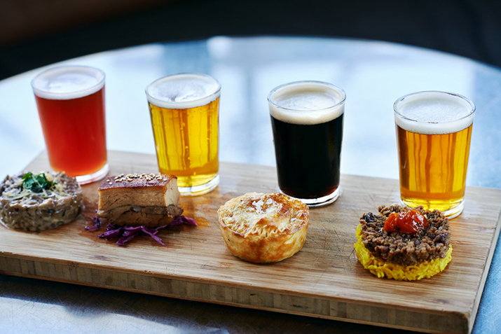

The wine industry had a two-hundred year head start on the beer industry in terms of culinary credibility. This is not because wine is a more versatile pairing ingredient — it is not. It is because wine sommeliers wrote things down, while brewers drank the evidence. Craft beer is arguably the most versatile pairing ingredient at any table, and it is long past time someone made the argument in writing.
The Three Principles
Every great beer and food pairing operates on one of three principles: contrast, complement, or cut. A contrasting pairing places opposing flavour elements against each other — a bitter, hop-forward IPA against rich, fatty fried food, where the bitterness acts as a palate cleanser between bites. A complementary pairing finds shared flavour compounds — a malty brown ale alongside a slow-roasted beef short rib, where both share caramelised, toasty Maillard reaction notes. A cutting pairing uses the beer's carbonation and bitterness to physically slice through a rich, fatty, or sweet element on the palate.
"A Witbier with oysters is the best twenty seconds in all of gastronomy. I will die on this hill." — Clara Kim, Head Cicerone
The IPA and Cheese Argument
The pairing that I am most frequently asked to defend is West Coast IPA with a sharp, aged cheddar. The conventional wisdom — still distressingly common — is that hop bitterness and strong cheese are fundamentally at war. This is wrong. The fat in aged cheddar coats and protects the palate from hop bitterness, while the proteolytic compounds responsible for that sharp, crystalline character echo and amplify the citrus and resinous notes in the hop oil profile. The result is something genuinely greater than the sum of its parts.

Carbonation as a Pairing Tool
Carbonation is an underrated pairing element that wine simply cannot replicate. The physical scrubbing effect of CO₂ bubbles on the palate removes residual fat and flavour molecules between bites, functioning as a palate-cleansing tool that refreshes the mouth in a way that still, tannic wine cannot. This is why a crisp, well-carbonated pilsner works so brilliantly with fried food — not just because of flavour contrast, but because the bubbles literally clean the palate between each piece. A flat beer would be significantly less effective at the same task.
12 Pairings Worth Trying This Week
- Witbier + fresh oysters (classic complement)
- West Coast IPA + aged cheddar (contrast)
- Oatmeal Stout + dark 70% chocolate (complement)
- Saison + roast chicken with herbs (complement)
- Gueuze + foie gras (cut — extreme version)
- Hefeweizen + Thai green curry (contrast)
- Brown Ale + slow-braised beef short rib (complement)
- Pilsner + fish and chips (cut — classic)
- Imperial Stout + vanilla ice cream (complement)
- Gose + ceviche (salt complement)
- Barleywine + Stilton blue cheese (complement)
- Pale Ale + grilled salmon with lemon (complement)
The Role of Malt in Pairing
While hops get all the attention in pairing discussions, malt character is often the more practically important variable. The Maillard reaction compounds in kilned and roasted malts — the same chemical processes that create flavour in roasted coffee, caramelised onions, and grilled meat — create natural synergies with a wide range of cooked foods. A chocolate malt stout pairs with dark chocolate not because someone decided it should, but because both contain the same class of pyrazine and furan compounds produced by heat application to sugars and amino acids. Understanding this chemistry makes intuitive pairing significantly more reliable.